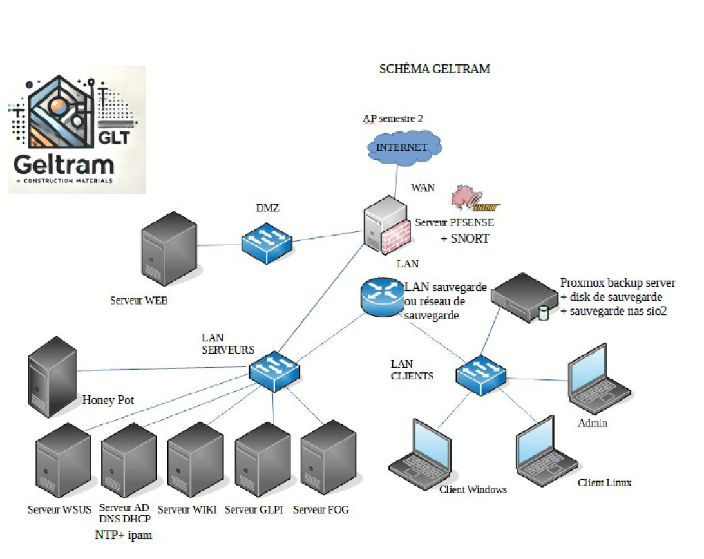
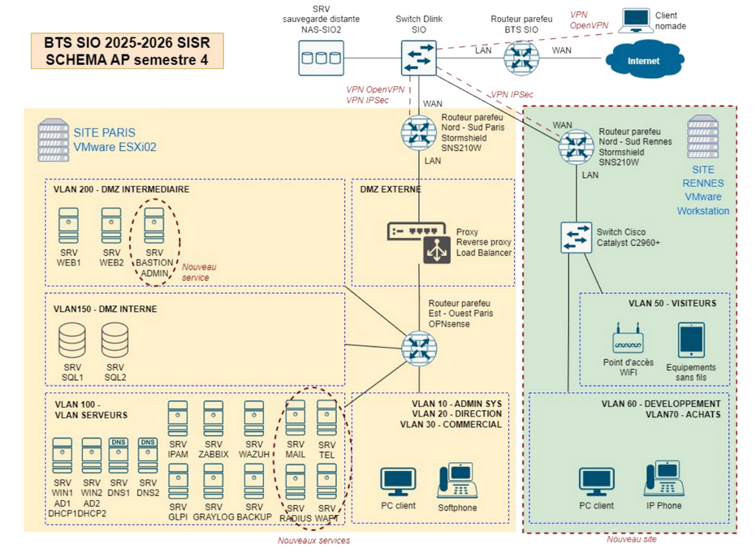
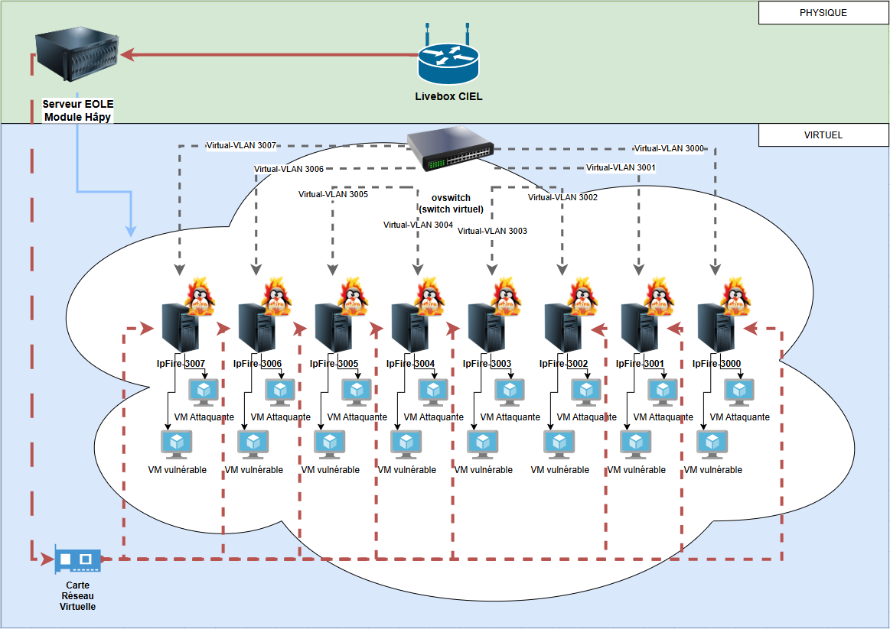
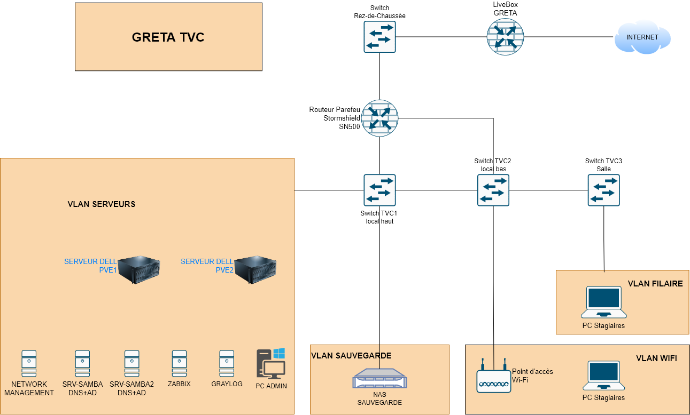

Mes Projets
AP Semestre 1 – Egnaro
Contexte : Réalisation d’une architecture réseau et système sécurisée pour l’entreprise
fictive Egnaro.
Objectifs : Hébergement local d’un site web vitrine, gestion des accès, segmentation
VLAN, sécurité des OS, automatisation et supervision.
Points clés
- Conception réseau (plan d’adressage, VLAN, routage, sécurité)
- Déploiement et sécurisation des OS (Linux, Windows)
- Installation et paramétrage du serveur web et des accès clients
- Automatisation de la supervision (script de circulation web)
- Documentation complète (schémas, comparatifs, justifications)
Schéma du projet

AP Semestre 2 – Geltram
Contexte : Mise en place d’une infrastructure informatique moderne et sécurisée pour
l’entreprise Geltram.
Objectifs : Segmentation réseau, gestion centralisée des droits, sécurité, sauvegardes,
services réseau et documentation.
Points clés
- Création de VLANs (Administrateurs, Commerciaux, Production, etc.)
- Active Directory, gestion des groupes et des droits
- Déploiement de services : helpdesk, DNS, serveur web, wiki
- Sécurité : filtrage, ACL, honeypot, sonde Snort
- Sauvegardes, supervision, documentation détaillée
Schéma du projet

AP Semestre 3A - GSB (Projet A)
Contexte : Le laboratoire GSB dispose d'une application Web critique de gestion des frais
de remboursement. Afin de garantir une disponibilité élevée et un accès sécurisé depuis
l'extérieur, l'infrastructure doit être restructurée pour include une DMZ et une tolérance de
panne.
Objectifs : Mettre en place une architecture avec réplication des services critiques (AD,
DHCP, DNS), répartir les bases de données (LAN) et l'application (DMZ), et protéger le SI avec
un routeur pare-feu OPNsense.
Points clés
- Haute disponibilité et tolérance de panne avec réplication (AD1/AD2, DHCP, SQL1/SQL2)
- Création d'une DMZ pour isoler le cluster de serveurs Web (SRV WEB1, SRV WEB2)
- Sécurité périmétrale robuste et routage inter-VLANs via OPNsense
- Gestion des adresses IP via IPAM et sauvegarde sur NAS
Schéma du projet

AP Semestre 3B - GSB (Projet B)
Contexte : Suite au projet A, l'infrastructure de base étant opérationnelle, la DSI
souhaite renforcer la sécurité, l'automatisation et la supervision globale du système.
Objectifs : Mise en place d'une défense en profondeur (double pare-feu, multiples DMZ),
optimisation par répartition de charge (Load Balancing), automatisation via PowerShell, et
déploiement d'une solution de supervision (SIEM, IPS).
Points clés
- Architecture de défense en profondeur with double pare-feu
- Optimisation du cluster Web par un répartiteur de charge (Load Balancer)
- Automatisation de l'infrastructure et gestion des utilisateurs AD via PowerShell
- Supervision proactive, centralisation des logs (SIEM) et détection d'intrusions (IPS)
Schéma du projet

AP Semestre 4 - GSB (Projet C)
Contexte : Extension de l'infrastructure du laboratoire Galaxy-Swiss Bourdin (GSB) avec
la création d'une nouvelle entité à Rennes connectée au siège de Paris.
Objectifs : Établir une connectivité sécurisée (VPN), déployer des services de
communication (Mail, VoIP), et renforcer la sécurité globale avec une supervision active.
Points clés
- Connectivité permanente VPN entre Paris et Rennes
- Mise en place d'un serveur de messagerie et de la téléphonie IP (VoIP)
- Sécurité : Pare-feu SNS Stormshield, proxy captif, IDS, RADIUS (802.1x)
- Supervision des équipements et alertes automatisées
- Tests d'intrusion, audit Active Directory et déploiement de services annexes (FOG/WDS/WSUS)
Schéma du projet

Stage 1 - OpenNebula
Contexte : Projet pédagogique utilisant OpenNebula comme cloud privé pour déployer des
VMs d'attaque (Kali) et cibles vulnérables (Metasploitable, DVWA). Les VMs sont "jetables" pour
éviter les persistances après exploitation, avec isolation via VLANs et routeurs virtuels.
Objectifs : Déployer en un clic des groupes de VMs (attaquants + cibles + routeur) via
OneFlow. Réinitialiser automatiquement les VMs à l'état initial post-TP, même si modifiées.
Gérer un réseau complexe avec DHCP, NAT et isolation pour une robustesse pédagogique.
Points clés
- Images non persistantes : Retour à l'état initial après suppression, idéales pour VMs jetables
- Snapshots et revert : Permettent de revenir manuellement ou via scripts à un état propre
- OneFlow : Orchestre services multi-VM with dépendances et élasticité.
- Réseau : Virtual Routers pour DHCP/NAT, contextualisation à configurer avec précaution pour ISO brutes
Schéma du projet

Stage 2 - GRETA
Contexte : Mission de refonte complète de l'infrastructure informatique du GRETA TVC au
lycée Félix Le Dantec.
Objectifs : Déployer une nouvelle architecture virtualisée (Proxmox), moderniser le
réseau et la sécurité (Stormshield, VLANs, Wi-Fi), et mettre en place de nouveaux services
centraux (Samba, NAS, Supervision) pour les stagiaires et l'administration.
Points clés
- Déploiement d'un cluster Proxmox (2 nœuds) hébergeant l'ensemble des services virtuels.
- Mise en place d'un annuaire redondé avec 2 serveurs Samba et administration RSAT (Windows 11).
- Configuration d'un NAS pour le partage de fichiers (TPs, dossiers personnels) et les sauvegardes des VMs.
- Refonte réseau et sécurité (Stormshield) : segmentation VLAN, règles de filtrage strictes, et accès distant via VPN SSL lié à l'annuaire.
- Supervision proactive avec l'intégration de serveurs Zabbix et Graylog, et déploiement du Wi-Fi (UniFi).
Schéma du projet
